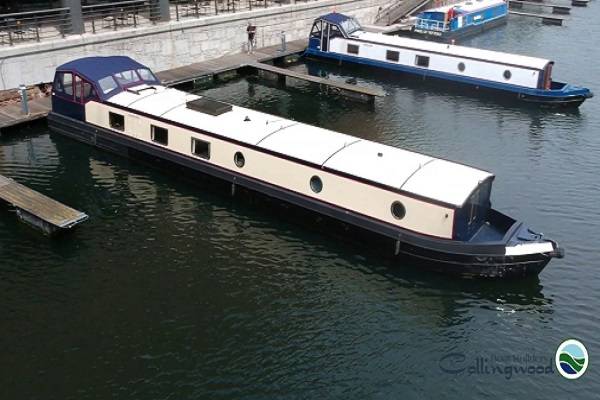
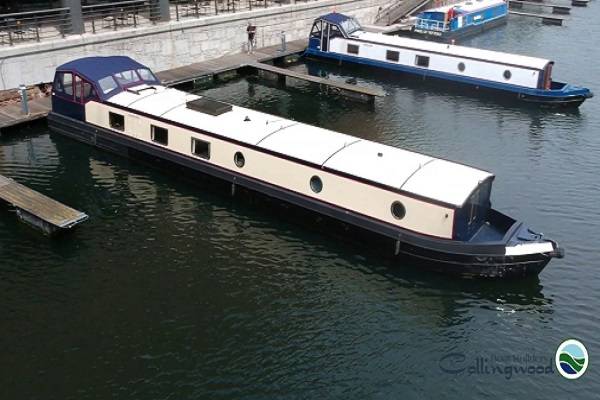

Liverpool Marina is an independent family run marina with a bar & restaurant facility based just outside the heart of the bustling Livepool city centre. Named as the top UK city and third in the world for people to visit by Travel Bible Rough Guides*, the city is ever expanding with more sites to see and things to do than ever before. Read more...
The MMBC was founded at Litherland in 1932 and is one of the oldest Inland Waterways cruising clubs in existence (click for press cuttings) The club’s objective is to encourage interest in boat building, cruising, popularise inland waterways and social contact with people interested in these and allied activities. The MMBC is affiliated to the Inland Waterways Association and the Association of Inland Waterways Cruising Clubs. Read more...
Millions of bricks, thousands of panes of glass and hundreds of steel girders constitute what was once part of the life blood of the thriving Port of Liverpool – the warehouses. Rum and tobacco imported from exotic locations were stored here in great brick buildings, the size the world had never seen before. The docks at the mouth of the Mersey River, including Stanley Dock, pioneered modern dock technology, transport and port management. Stanley Dock sits at the heart of these historic docks. The dock is a UNESCO World Heritage Site and a key heritage asset for Liverpool city. Read more...
We at Collingwood have a rich tradition in the design and construction of canal boats. Based in Liverpool, we are one of the longest established boat builders in the UK, with an enviable reputation for delivering quality. With over 40 years of experience in the industry, we pride ourselves on our attention to the finer details at every step of the boat-building process. From conception to inception, we deliver innovative designs, suitable for both recreation and living aboard, leaving you with a vessel that we’re proud to put the Collingwood name to. Read more...
Liverpool’s Ultimate Sightseeing Experience. Hop on the world famous Mersey Ferry and see Liverpool’s UNESCO World Heritage Waterfront. Read more...